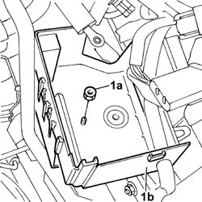
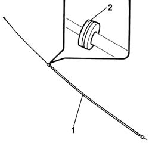

7025A28 bonnet lid RELEASE - R.R.
- Path
- Procedures > 70 FITTINGS > 7025 COMPARTMENT LIDS > 7025A BONNET LID > 7025A28 bonnet lid RELEASE - R.R.
- Kind
- repair procedure (removal / refitting; the operation number is the code)
- Applies to
- all engines; all production periods
- Interactive page
- https://sloeber94.github.io/elrnDB-lThss/en/#/126556
Applies to: all engines; all production periods
 Removing
Removing
 Refitting
Refitting- Disconnect the negative battery terminal.
See in Op. 5505A13 Additional junction unit in engine compartment - R.R.
See in Op. 1048A28
See in Op. 7025A34 bonnet lid lock (one) - r+r or repair
See in Op. 7025A24 Bonnet release LEVER - R.R.
1. Undo the fixing nut (1a) and place the additional engine compartment junction unit tray (1b) at the side.

Applies to: all engines; all production periods
1. Working from inside the passenger compartment, remove the flexible cable, releasing it from the retaining springs.
2. Release the cable duct rubber mounting from the housing.

Applies to: all engines; all production periods
Refitting
Removing- Check that the flexible cable is not damaged.
- Connect the end of the flexible cable, lock side, to the sensor and restore the routing of the flexible cable.
- Fit the cable duct rubber mounting in the housing and secure the flexible cable to the retaining springs.
- Reposition the additional engine compartment junction unit tray and secure it using the nut.
See in Op. 7025A24 Bonnet release LEVER - R.R.
See in Op. 7025A34 bonnet lid lock (one) - r+r or repair
See in Op. 1048A28
See in Op. 5505A13 Additional junction unit in engine compartment - R.R.
- Connect the negative battery terminal.